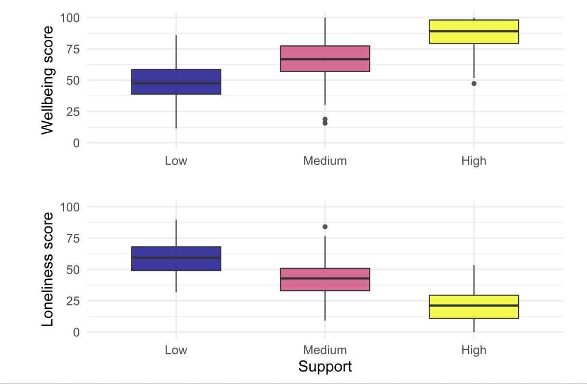
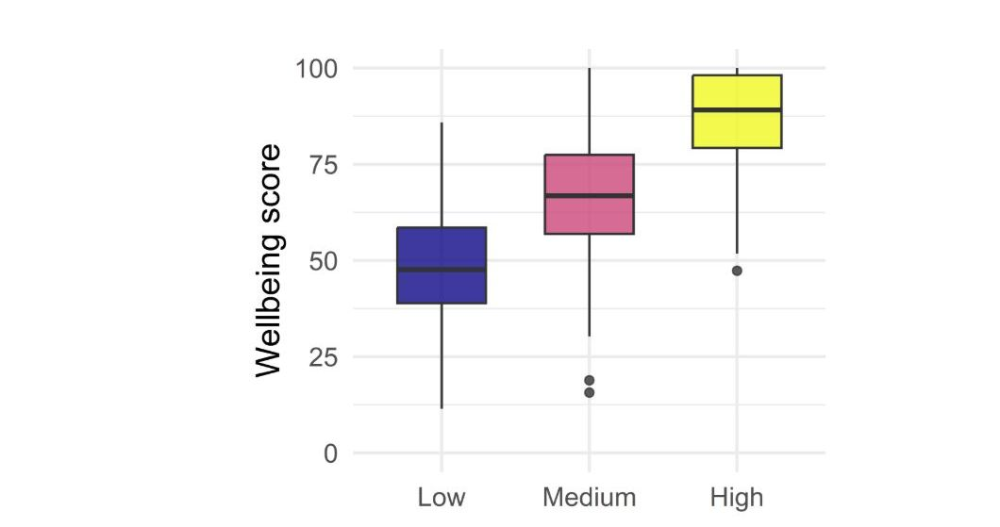

scale_*_* to customise breaks, labels, limits, and colours
Polishing visuals with theme()
Annotations, text, and direct labelling for clarity
Faceting and multi-panel layouts with facet_* and patchwork
Remind students very briefly what we did in Week 7: we focused on explaining with plots, not just exploring.
Emphasise that the therapy report we will look at today uses many of those ideas: clear labels, sensible scales, consistent themes, and multi-panel patchwork layouts.
Today
Why build a report?
Inspect a finished Quarto report
Basic anatomy of a Quarto report
Header
Setup
Body combining text, code, and code-generated figures
How to build a Quarto report
Project structure and workflow
What a Quarto report looks like
The parts that build a report
Today
Why build a report?
Why build a report?
Quarto reports tell a story by combining:
Prose (context, narrative, explanations)
Code (R for data wrangling and plots)
Figures and tables (output from the code)
Why build a report?
Everything lives in one .qmd file:
Combines code, output, and interpretation
Reproducible!
Emphasise reproducibility: if someone presses “Render” on their report, they should get the same HTML they submitted.
Today
Inspect a finished Quarto report
A finished example
Our example report for this week:
Uses the therapy dataset
Contains a short introduction, two main figure panels, and a summary
support_level
therapy
age
loneliness_score
wellbeing_score
sleep_quality
sex
year
Medium
Yes
23
69
63
3
Male
2022
Medium
Yes
31
46
89
8
Male
2019
High
Yes
35
46
80
8
Male
2019
Low
No
29
40
46
5
Female
2020
Low
Yes
34
40
69
9
Female
2022
Low
No
25
68
38
6
Male
2019
A finished example
Our example report for this week:
Uses the therapy dataset
Contains a header, short introduction, two main figure panels, and a summary
Emphasize components: - Title and author at the top - Introductory text - First multi-panel figure showing outcomes by support level.
Today
Basic anatomy of a Quarto report
Anatomy of a Quarto report: Overview
A file with extension .qmd
Contains:
YAML header: at the top
Setup code chunk: load packages, data
Body including sections written in Markdown and code chunks that generate output (tables, plots) integrated with section text
Anatomy of a Quarto report: Example
Let’s look at our example report and inspect:
YAML header
Setup chunk
Body
Anatomy of a Quarto report: Overview
When you click Render in RStudio, Quarto:
Formats the Markdown text and runs the code
Integrates the code outputs with the text
Produces an HTML report
Reassure students that this is very similar to what they saw in the DataCamp RMarkdown chapter: Markdown + code + output.
Highlight that the main differences are: - The file extension is .qmd. - The YAML uses format: instead of output:. - Quarto supports more output types, but we’ll use HTML here.
Today
How to build a Quarto report
Today
How to build a Quarto report
YAML header
YAML header
---title:"Social Support, Therapy, and Wellbeing"author:"Exam number 123456"date:"2025-11-13"format:html:toc:truetoc-depth:2number-sections:falseself-contained:trueexecute:message:falsewarning:false---
Go through each part:
title, author, date are what show up at the top of the report.
format: html: controls how the HTML looks:
toc: true adds a table of contents,
self-contained: true bundles everything into a single HTML file.
execute: controls default behaviour of code:
Here we’re hiding messages and warnings globally.
Emphasise that for the assessment, they should have a sensible title and use their exam number as the author.
Highlight the use of a relative path into the data folder, which lives inside of the same folder as the quarto report, so the quarto report will be able to find it. Matches the project structure they will use for assessment.
Body: Overview
Combine code chunks with Markdown to format section headers and text
Body: Sections using Markdown
Arrange report into high-level sections with headers:
# Introduction...# Data overview...# Support level affects wellbeing and loneliness...# Summary...
Explain that each top-level heading begins with #.
For the assessment, encourage students to have: - A short Introduction - A concise Data/Methods overview - 2–3 main Results sections (each tied to one or two key figures) - A short Summary/Discussion.
Point out that headings drive the table of contents automatically.
Body: Text using Markdown
Headings
# Main section
## Subsection
Emphasis
*italic* → italic
**bold** → bold
Lists
- First point
- Second point
Keep this light: the goal is just to remind them that the text part of a Quarto report is written in Markdown.
Mention that the DataCamp chapter they did covers more markdown tricks, and they can refer back to it if needed.
Body: sections, text and code chunks
A typical section might look like:
# Support level affects wellbeing and lonelinessWe first examine wellbeing and loneliness scores by support level. The pattern is clear: participants with low perceived support report the lowest wellbeing and highest loneliness. As support increases, wellbeing also increases, whereas loneliness decreases.```{r}#| label: fig-support-outcomes#| echo: false#| fig-cap: "Wellbeing scores by perceived support level."#| out-width: "60%"#| fig-align: "center"supp_wellbeing <- ggplot(...)supp_loneliness <- ggplot(...) supp_wellbeing / supp_loneliness ```
Emphasise the pattern:
Short paragraph to introduce the figure and describe the key pattern. Then a code chunk that produces the figure.
Note that the reader doesn’t see the code for the figure, only the result, because echo: false hides the code.
Before and after: figure layout

Before and after: figure layout

Inline code
We can also insert small pieces of R output directly in the text:
This report uses data from `r nrow(therapy_df)` participants.
This report uses data from 400 participants.
Explain:
Backticks with r … inside tell Quarto to run the R code and insert the result. This is useful for things like sample sizes, means, or percentages.
Reassure them that inline code is optional, but can help keep numbers in the text in sync with the analysis.
Have an overall folder for the project Include your qmd file inside Include a subfolder with data. This makes it easy to find/read the data within your qmd
Typical workflow
Create / open the RStudio project for your assessment
Create / open your report.qmd
Make changes to:
Text, headings, and interpretations
Code chunks and chunk options
Save the file
Click Render to regenerate the HTML report
Check that the figures and text look as expected
Emphasise the importance of saving before rendering.
Suggest that they render frequently while working on the report, rather than only at the very end — it’s easier to catch small issues early.